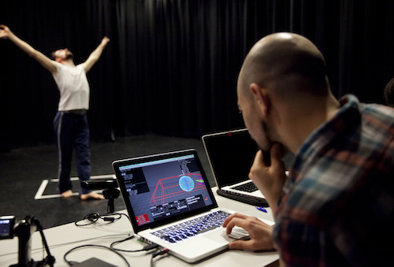

Simon Katan
I’m a digital artist, creative coder, and educator with a background in music and a strong preoccupation with games and play.
My work incorporates hidden mechanisms, emergent behaviour, paradox, self-reference, inconsistency, abstract humour, absurdity and wonder.
I make software which creates musical odysseys through exploring animated worlds and design games in which the players unwittingly become performers of bizarre and occasionally daft rites.
I completed a PhD researching audio-visual co-dependency in music at Brunel University in 2012 and won a Prix Ars Electronica Honorary Mention for my work ‘Cube with Magic Ribbons'. I have performed, and have been commissioned extensively in the UK and Europe. Recent organisations include The Roundhouse (London), Tyneside Cinema (Newcastle), IEM (Graz), and ZKM (Karlsruhe). I conduct research and development into gamebased learning and STEAM, developing online content for Coursera / University of London's BSc in Computer Science. I lecture in computing and am Director of Undergraduate Studies at Goldsmiths University - Department of Computing.
